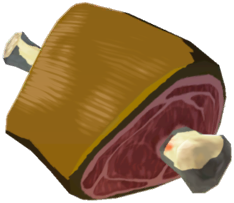
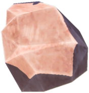

Gorumet Cheesy Meat Bowl


"Top-quality meat and cheese piled high. But can it satisfy the ultimate gourmand?"
Ingredients:
- Hateno Cheese
- Raw Gourmet Meat
- Hylian Rice
- Rock Salt
- First, boil rice and add butter.
- Next, cook meat with a variety of Hylian seasonings.
- Add meat on top of rice and sprinkle with rock salt.
- Melt cheese and drizzle over dish.
- Add additional seasonings as needed. Recommended are pepper flakes and cilantro.